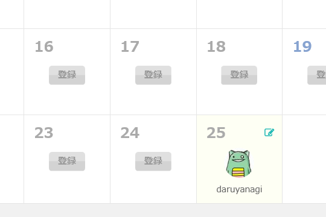

今年も始動？ だるやなぎ Advent Calendar 2015
公開日：
今年も Advent Calendar の季節が近づいてきました。う……頭の中で何かが……
だるやなぎアドバントカレンダー（震え声
— だるやなぎ に天使が舞い降りた！ (@daruyanagi) 2015年11月5日
黒歴史がフラッシュバックしますね。
あの悲惨な歴史は、けっして繰り返してはいけないものです。――にも拘らず。
— ＪＺ５ (@jz5) 2015年11月5日
@daruyanagi 今年も 25 日の締めを頼むで https://t.co/IogEhk6Myy
— しばやん (@shibayan) 2015年11月5日
「歴史は繰り返す」という言葉が、脳裏をよぎりました。ほんまこいつら鬼畜やと思います。

追伸
かわいそうだと思う人は LINE スタンプでも買ってあげてください。